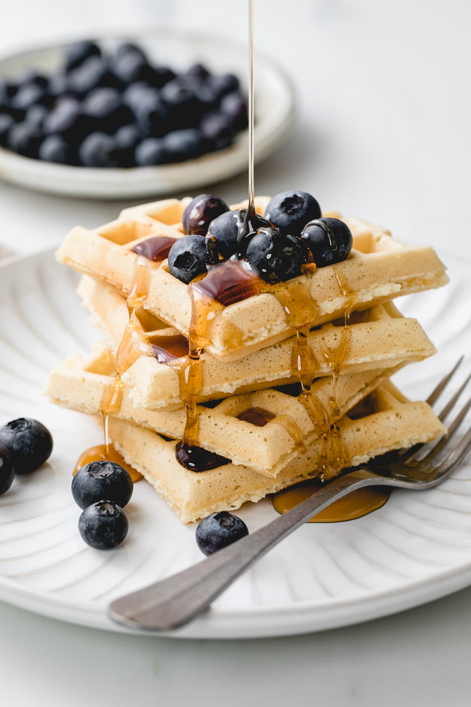

Home
Waffles

Description
Ingredients
- 2 cups rolled oats - use gluten free if needed (160g).
- 2 medium bananas (about 1 tightly packed cup).
- 1 cup your favourite plant-based milk (240ml) (see recipe note below).
- ½ teaspoon baking powder (for fluffier, crispier waffles!)
- 1 scoop protein powder (to make waffles more filling)
Steps
- Blend oats on high power for 30 seconds until fine flour.
Stir briefly to loosen (and ensure they aren't tightly packed in base of blender).
- Add banana and milk (and any optional add-ins) and blend for 30 seconds, until mixture is smooth and lump-free.
- Switch waffle iron on and allow to reach cooking temperature. Using kitchen towel, thoroughly coat all cooking surfaces with oil to avoid sticking.
- Spoon about ½ cup batter evenly into centre of waffle iron, being careful not to overfill.
Close lid and cook for 6-7 minutes (or until steam coming out reduces).
- Open iron SLOWLY, leave waffle in place for 30 seconds (to avoid sticking) then gently remove with a flat knife.